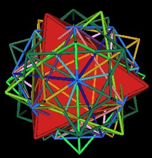

Recall the Cuboctahedron, which Fuller calls the "Vector Equilibrium" (VE).
| The VE |
With a Cuboctahedron (VE) constructed out of sticks and rubber vertices, Fuller often demonstrated what he called the "Jitterbug" motion. The Jitterbug shows how the VE can fold up into an Octahedron as well as how an Octahedron can expand in the VE.
|
|
||
| VE position |
Jitterbug in motion
|
Octahedron position |
The Jitterbug has 8 triangular faces. As these 8 faces rotate, they also move radially inward or outward from the center of volume along its 4 rotation axes.

|
|
Motion along 4 rotation axes
|
These are the same 4 rotation axes that we used to rotate the 4 cubes.
|
Jitterbug rotation axes |
Fuller pointed out that between the VE and the Octahedron positions, the Jitterbug will pass through an Icosahedron position.
|
Jitterbug defines the Icosahedron
|
If we allow the 8 rotating triangles to interpenetrate each other, then the Jitterbug can rotate and contract into two intersecting tetrahedra to define a cube.

|
||
| Jitterbug in Octahedron position |
Jitterbug in motion
|
Jitterbug in Cube position |
Further rotation and contraction results in the definition of another Icosahedron.

|

|

|
| Jitterbug in Cube position |
Jitterbug defines the Icosahedron
|
Jitterbug in Icosahedron position |
When the 120 Polyhedron is considered with all of its defining, internal polyhedra, many Jitterbugs can easily be identified. These Jitterbugs are not all in the same open position, nor of the same scale. Here is an illustration looking into the array of polyhedra through a regular Dodecahedron vertex. (The outer edges of the 120 Polyhedron are not shown.)
|
Looking into a Dodecahedron vertex |
In the next sequence of illustrations, I display various Jitterbugs by changing the associated polyhedron into a solid appearance. All of these Jitterbugs have the same face centered rotation axis passing through the regular Dodecahedron's vertex.
|
A Jitterbug in the Icosahedron position |
A Jitterbug defined by Cube edges |
|

A Jitterbug in the Octahedron position |
A Jitterbug in the VE position |

A Jitterbug in the Tetrahedron position |
It is difficult to see the Jitterbug defined by the Cube's edges in the above illustration, so here is a different perspective. The Dodecahedron is shown with the 5 Cubes. Some of the edges of the Cubes are outlined in black. Filling in the triangular faces in black reveals the Jitterbug.

|

|
| A Jitterbug defined by the Cube edges | |
Notice the variation in the triangular face sizes and orientations. These variations show that there are many different Jitterbugs operating within the 120 Polyhedron.
The Octahedron is one position which the Jitterbug passes through. There are 5 Octahedra in the 120 Polyhedron. Here is a movie showing the dynamics of 5 Jitterbugs. Note that the Jitterbugs define both the Icosahedron and the Dodecahedron.
|
Five Jitterbugs passing through and
defining an Icosahedron and Dodecahedron |
Here are some additional combinations of polyhedra which I find particularly interesting.
| Ten Tetrahedra |
| Five Octahedra |
| Five Octahedra |
| Five Rhombic Dodecahedra |
| 5 Octahedra, Icosahedron, Dodecahedron | |
|
Surface waves over the 120 Polyhedron |